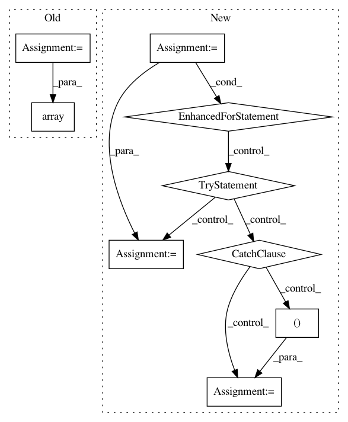

929cf0a4890e418ecec0b000ed7fefa2372bc082,GPy/core/gp.py,GP,predict_magnification,#GP#Any#Any#Any#Any#,405
Before Change
G = self.predict_wishard_embedding(Xnew, kern, mean, covariance)
from ..util.linalg import jitchol
return np.array([np.sqrt(np.exp(2*np.sum(np.log(np.diag(jitchol(G[n, :, :])))))) for n in range(Xnew.shape[0])])
//return np.array([np.sqrt(np.linalg.det(G[n, :, :])) for n in range(Xnew.shape[0])])
def posterior_samples_f(self,X,size=10, full_cov=True):
After Change
G = self.predict_wishard_embedding(Xnew, kern, mean, covariance)
from ..util.linalg import jitchol
mag = np.empty(Xnew.shape[0])
for n in range(Xnew.shape[0]):
try:
mag[n] = np.sqrt(np.exp(2*np.sum(np.log(np.diag(jitchol(G[n, :, :]))))))
except:
mag[n] = np.sqrt(np.linalg.det(G[n, :, :]))
return mag
def posterior_samples_f(self,X,size=10, full_cov=True):
In pattern: SUPERPATTERN
Frequency: 3
Non-data size: 9
Instances
Project Name: SheffieldML/GPy
Commit Name: 929cf0a4890e418ecec0b000ed7fefa2372bc082
Time: 2015-09-07
Author: ibinbei@gmail.com
File Name: GPy/core/gp.py
Class Name: GP
Method Name: predict_magnification
Project Name: ilastik/ilastik
Commit Name: 1f08e48e0508cbbeb762ce3277c341169e7df0c4
Time: 2015-11-18
Author: bergs@janelia.hhmi.org
File Name: ilastik/applets/labeling/labelingImport.py
Class Name: LabelImportOptionsDlg
Method Name: _initInsertPositionMappingWidgets
Project Name: ilastik/ilastik
Commit Name: 1f08e48e0508cbbeb762ce3277c341169e7df0c4
Time: 2015-11-18
Author: bergs@janelia.hhmi.org
File Name: ilastik/applets/labeling/labelingImport.py
Class Name: LabelImportOptionsDlg
Method Name: __init__